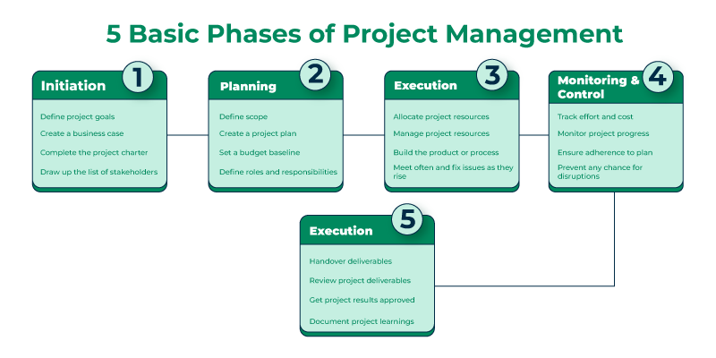

3.2 Project Management Process
The project management process is the systematic set of activities through which a software project is planned, executed, monitored, controlled, and closed. It is the discipline of identifying scope, estimating the work involved, creating a project schedule, keeping the team informed about progress, handling problems, and discussing solutions.
This process runs in parallel with the SDLC from Topic 2 §2.1. The SDLC tells what technical work must be done, while the project management process tells how that work is governed. A software project manager lays out the complete blueprint in a project plan that defines scope, resources, timelines, techniques, communication, testing, and maintenance steps.
Five phases of the project management process
All software projects pass through five phases: initiation, planning, execution, monitoring and control, and closure. These are also called process groups, the project management cycle, or the project life cycle. Phases 3 and 4 are not strictly sequential — monitoring runs continuously alongside execution until the project ends.
A shorter four-stage view is also used: feasibility study, project planning, project execution, and project termination. Feasibility sits inside initiation, and termination is part of closure.

Each phase has a distinct focus, as shown in the diagram above:
- Initiation: Define project goals, create the business case, complete the project charter, and identify stakeholders.
- Planning: Define scope, create the project plan, set the budget baseline, and assign roles and responsibilities.
- Execution: Allocate and manage resources, build the product, and resolve issues through regular team meetings.
- Monitoring & control: Track effort and cost, monitor progress, ensure adherence to the plan, and prevent disruptions.
- Closure: Hand over deliverables, review and get approval, and document lessons learned for future projects.
Phase 1 — Project initiation / feasibility study
Initiation is where the organisation decides whether the project should exist at all.
- A feasibility study explores system requirements and checks whether the project can realistically be completed.
- Economic feasibility checks whether the benefits justify the cost.
- Technical feasibility checks whether the required technology can deliver the solution.
- Operational feasibility checks whether the system will work in the organisation's day-to-day environment.
- The study takes user requirements and domain details as input and produces a recommendation to proceed or not proceed, along with any constraints.
Key documents and activities in this phase:
- The business case explains why the project is needed and what return on investment is expected.
- The feasibility study confirms the project can be done on time and within budget.
- The project charter formally states the project's goals, objectives, and high-level scope.
- The manager forms the project team, may set up a project management office, and holds a kickoff meeting to communicate goals and scope.
- Stakeholders are identified so their expectations are known from the start.
Phase 2 — Project planning
Planning is where the manager defines exactly how the project will be carried out. The output is a detailed project plan — a roadmap for execution.
Key planning activities:
- The manager sets project objectives and goals that are specific and measurable.
- The manager develops strategies, project policies, procedures, and courses of action.
- The manager develops and documents the software project plan formally.
- The manager prepares the project budget and allocates funds to tasks.
- The manager conducts risk management and plans mitigation before work begins (see §3.8).
- The manager builds a Work Breakdown Structure (WBS) that decomposes the project into manageable tasks.
- The manager performs size, effort, schedule, and cost estimation using §3.5 and COCOMO (§3.6).
Documents and subsidiary plans produced during planning:
- The project schedule shows when each task will be completed and how resources are distributed — often as a Gantt chart (§3.7).
- The scope management plan defines how scope will be tracked and controlled as the project progresses.
- The risk management plan lists potential risks and their mitigation strategies.
- The resource management plan describes how people, tools, and budget will be acquired and assigned.
- The stakeholder management plan identifies all stakeholders and sets rules for keeping them informed.
- The quality plan defines standards, review points, and testing milestones.
- The communication plan specifies who receives which reports and how often meetings occur.
Phase 3 — Project execution
Execution is where the plan is put into action.
- The development team performs the actual technical work while the manager coordinates people, resolves conflicts, and keeps stakeholders informed.
- A critical decision is choosing the appropriate SDLC model based on project size, nature, time and budget constraints, and domain requirements.
- An inappropriate SDLC choice can lead directly to project failure.
- During execution the SDLC phases run in practice: requirements analysis, design, coding, testing, implementation, delivery, and maintenance.
- The manager ensures each stage completes successfully by measuring progress, monitoring team performance, generating status reports, and resolving issues.
- In Agile projects, execution happens in short sprints, but the manager's coordinating role remains the same.
Phase 4 — Project monitoring and control
Monitoring and control run throughout execution, not only after it.
- The manager tracks project progress and compares actual results against the project plan.
- Cost and effort are tracked continuously to keep the current project on budget and to improve future estimates.
- Quality assurance is applied through quality control techniques at each milestone.
- Status reports, timesheets, workload reports, allocation reports, and expense reports keep the manager and stakeholders informed.
- When deviations appear, the manager takes corrective action such as reassigning resources, adjusting the schedule, or escalating to senior management.
- Further detail is covered in §3.9.
Phase 5 — Project closure / termination
Closure marks the formal end of the project.
- The manager presents completed deliverables to stakeholders and obtains their acceptance.
- Resources are released, documentation is finished, and all open items are signed off.
- For software, handover includes source code, user manuals, test reports, and maintenance agreements.
- A project may close after successful completion or terminate early without completion.
- Common reasons for early termination include rapidly changing technology, running out of time, organisational politics, excessive requirement changes, or exceeding the budget.
- After closure, a post-performance analysis is conducted and a final report records lessons learned and recommendations for future projects.
Principles of effective project planning
- Planning is necessary: Planning must be done before the project begins, not improvised during execution.
- Risk analysis: Senior management and the project team should consider risks before starting and include them in the plan.
- Tracking the project plan: Once prepared, the plan must be tracked and updated as conditions change.
- Quality standards: The plan must identify processes that ensure quality deliverables at every stage.
- Flexibility for change: The project plan should accommodate new changes while the project is in progress, within controlled change management.
Types of management within SPM
Beyond the five phases, SPM involves several specialised management activities that run across the project lifecycle:
- Conflict management: The manager restricts the negative effects of conflict while increasing its positive effects, such as better ideas from debate.
- Risk management: The manager identifies, analyses, and mitigates risks so their probability or impact stays at an acceptable level (see §3.8).
- Requirement management: The manager analyses, prioritises, tracks, and documents requirements, then supervises changes and communicates them to stakeholders.
- Change management: The manager handles transitions in goals, processes, or technology in a systematic and controlled way.
- Software configuration management (SCM): The team controls and tracks changes in software, including revision control and baselines (Topic 9).
- Release management: The manager plans, controls, and schedules software releases so new services reach the customer while existing services remain stable.
Key aspects the manager oversees
- Planning: The manager lays out the complete project blueprint covering scope, resources, timelines, strategy, communication, testing, and maintenance.
- Leading: The manager brings together and leads engineers, designers, and other specialists through strong communication and interpersonal skills.
- Execution: The manager ensures each SDLC stage completes successfully, measures progress, and generates status reports.
- Time management: The manager abides by timelines despite unavoidable changes to the original charter.
- Budget management: The manager creates the budget, controls spending, and reassigns funds when necessary.
- Maintenance planning: The manager ensures continuous testing, defect fixing, and product adjustment so the delivered software meets client needs.
Advantages and limitations
Advantages:
- The process provides a structured approach to managing projects.
- It helps define project objectives and requirements clearly.
- It improves communication and collaboration among team members.
- It helps manage project risks and issues proactively.
- It increases the chance that the project is delivered on time and within budget.
Limitations:
- The process can be time-consuming and bureaucratic.
- It may be inflexible when requirements change rapidly.
- It requires a skilled project manager to implement effectively.
- It may not be worth the overhead for very small or simple projects.
Integration with the SDLC
- Project management does not replace the SDLC — it wraps around it.
- During requirements, the manager ensures the SRS is reviewed on schedule.
- During design, the manager checks that the SDD aligns with scope.
- During coding, the manager tracks milestone or sprint completion.
- During testing, the manager monitors defect trends and decides whether the release date must slip.
- Choosing the wrong SDLC model during execution is itself a project management failure.
Q: Explain the project management process in software engineering. Describe all five phases with their key activities, and state the principles of effective project planning.
Model answer points:
- Define PM process: systematic planning, executing, monitoring, controlling, and closing a software project within scope, time, budget, and quality.
- State that PM runs parallel to SDLC; PM governs how work is done, SDLC defines what technical work is done.
- Phase 1 — Initiation: feasibility study (economic, technical, operational); business case, project charter; stakeholder identification; kickoff meeting; go/no-go decision.
- Phase 2 — Planning: WBS, schedule, budget, risk management, size/effort/cost estimation; subsidiary plans (scope, risk, resource, stakeholder, quality, communication).
- Phase 3 — Execution: implement plan; choose appropriate SDLC model; team performs requirements → design → coding → testing → delivery; manager coordinates, reports, resolves issues.
- Phase 4 — Monitoring & control: runs alongside execution; track cost, effort, quality; compare actual vs plan; corrective action; status reports.
- Phase 5 — Closure: deliverable acceptance, documentation, resource release; post-performance analysis and lessons learned; early termination reasons (budget, time, changing requirements).
- Five planning principles: plan before start, risk analysis upfront, track and update plan, quality standards in plan, flexibility for controlled change.
- Mention types of management: conflict, risk, requirement, change, SCM, release management.